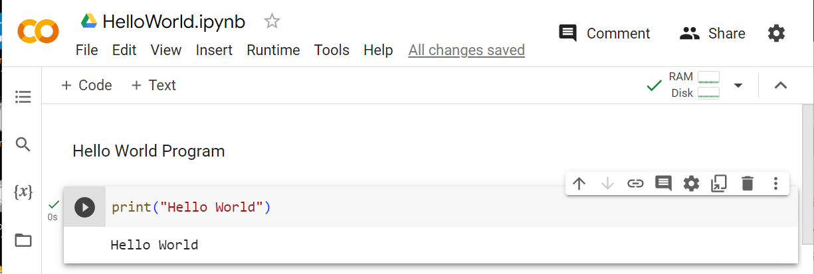
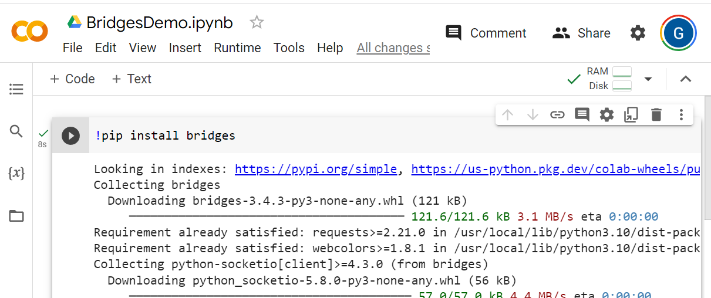
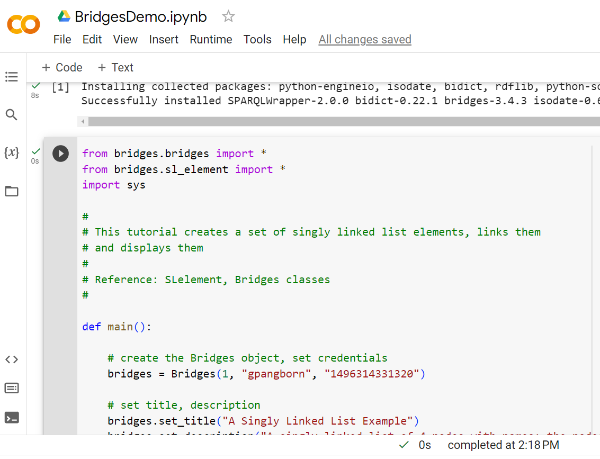
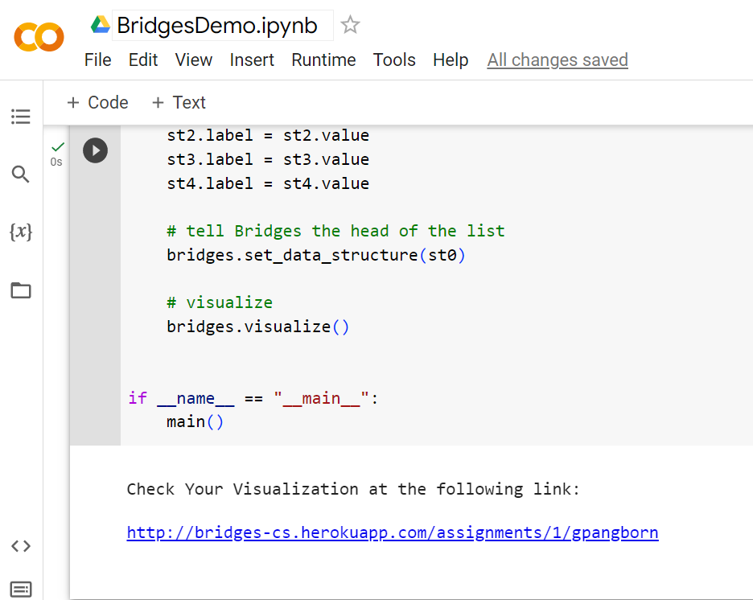

Step 1: Using Google Colaboratory
- If you do not have a Google account, navigate to the Google Colaboratory
site and create an account.
|

|
Step 2: Create Bridges Account
- Visit the Bridges
main page and create yourself an account
by clicking the login button
on the top navigation bar. Please ensure that
your user id is devoid of spaces, as it will be
used as part of the web link for your projects.
After creating your account, click on your profile
name in the upper right corner to view your
profile. Once in your profile, you will see your
API Key; you will need this API key in every BRIDGES program
you write.
|
Step Three: Install Bridges packages
- Create a new notebook and run the command
!pip install bridges in the first code block.
|

|
Step 4: Load and run an example BRIDGES program
- Create a new code block by clicking + Code.
- Copy / Paste the code for the
Singly Linked List Tutorial into the new code block.
- Set an assignment number and your credentials in the line that creates
the Bridges object at the beginning of the program.
- When you run the program, you will see a link printed on the console. Click that link to visualize the
output.
|


|